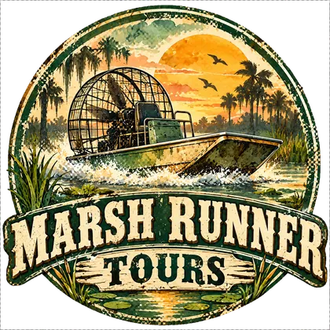

Iron Coast Club
« You, gravity, and one more repetition. »The owner's motto · Clifford et Ruth Benton
- OwnerClifford et Ruth Benton
- Since1978
- Address634 Palmetto Drive, Everglades
From interchange 9, follow Palmetto Drive; the rowing machines are behind the door without a sofa. - Opening hoursMon–Sat 5am–11pm; Sunday 6am–8pm, gravity available continuously.
Its story
Clifford and Ruth opened in 1978 with ten dumbbells and two exercise bikes. He demonstrates movements; she records progress in repetitions, never promises.
In 1984, a driver delivered a sofa instead of a rowing machine. Ruth returned it unopened; the refund paid for two benches and the sign now banning sofas.
Anecdotes
- In February 1984, customer Daryl Venn requested a lighter weight; Clifford pointed to the one beside it.
- In September 1985, Big Lou counted a set too fast; Ruth made him repeat it without music.
- In April 1986, Dolores Van Pelt inaugurated bench 3 while sitting on bench 2.
The ad
Played completely straight, on VOLT 107.3 FM.
(voix grave)Listen to VOLT 107.3 FM →
Iron Coast Club.
Everglades.
Salle de sport ouverte avant le lever du soleil et après le coucher du soleil.
Poids.
Rameurs.
Vélos.
Et haltères.
Beaucoup d'haltères.
Le coach ne parle pas beaucoup.
Il n'en a pas besoin.
Il pointe un poids du doigt.
Vous comprenez.
Vous le soulevez.
(pause)
Vous regrettez immédiatement votre décision.
Puis vous recommencez.
Abonnement : 19 dollars 99 par mois.
(pause)
Le canapé est interdit.
Iron Coast Club.
Pas de machines compliquées.
Juste vous…
(pause)
et la gravité.
Good to know
- The $19.99 membership covers equipment use, never equipment delivery to your home.
- The coach owns a new whistle; nobody has heard it.
The neighbour

Marsh Runner ToursMarsh Runner Tours is two gates away; Ruth sends members there when they request a seated activity.